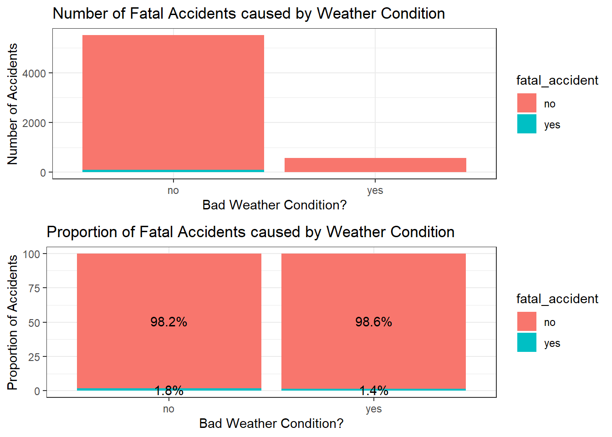

Code
pacman::p_load(lubridate, sf, tidyverse, gridExtra, tmap, maptools, ggplot2)The R packages that we will be using to prepare our data are as follows:
sf: Import, manage and process vector-based geospatial data in R.
tidyverse: a collection of packages for data science tasks
gridExtra: For displaying plots in the same column/row.
tmap: Provides functions for plotting cartographic quality static point patterns maps or interactive maps by using leaflet API.
maptools: Provides a set of tools for manipulating geographic data.
pacman::p_load(lubridate, sf, tidyverse, gridExtra, tmap, maptools, ggplot2)We will be importing the .RDS file prepared in the data_preparation document.
accidents_thai <- read_rds("data/rds/accidents_thai.rds")
accidents_thaiSimple feature collection with 6081 features and 11 fields
Geometry type: POINT
Dimension: XY
Bounding box: xmin: -5027.682 ymin: 1509922 xmax: 59252.71 ymax: 1546941
Projected CRS: WGS 84 / UTM zone 48N
First 10 features:
district province weather_condition road_description slope_description
727 Dusit Bangkok no wide curve other
748 Dusit Bangkok no other other
44601 Dusit Bangkok no wide curve other
52446 Dusit Bangkok no straight road other
53078 Dusit Bangkok no straight road other
54124 Dusit Bangkok no merge lane other
54203 Dusit Bangkok no straight road other
54715 Dusit Bangkok no straight road other
54971 Dusit Bangkok no straight road other
56233 Dusit Bangkok no straight road other
accident_categories vehicle_categories fatal_accident year weekday
727 others two_wheeled no 2019 Mon
748 others two_wheeled no 2019 Mon
44601 others two_wheeled no 2021 Sun
52446 others two_wheeled no 2021 Fri
53078 others two_wheeled no 2021 Mon
54124 others four_wheeled no 2021 Thu
54203 others two_wheeled no 2021 Sat
54715 others two_wheeled no 2021 Thu
54971 others two_wheeled no 2021 Wed
56233 others two_wheeled no 2021 Tue
accident_hr geometry
727 0 POINT (17104.54 1529804)
748 16 POINT (17104.54 1529804)
44601 13 POINT (17104.54 1529804)
52446 20 POINT (16465.63 1528223)
53078 4 POINT (16803.53 1529124)
54124 15 POINT (16411.63 1528200)
54203 12 POINT (16892.33 1529241)
54715 14 POINT (16840.72 1529215)
54971 11 POINT (15434.02 1525907)
56233 14 POINT (15664.84 1526448)thai_roads <- read_rds("data/rds/thai_roads.rds")
thai_roadsSimple feature collection with 10835 features and 9 fields
Geometry type: GEOMETRY
Dimension: XY
Bounding box: xmin: -5310.233 ymin: 1499220 xmax: 60289.26 ymax: 1547078
Projected CRS: WGS 84 / UTM zone 48N
First 10 features:
osm_id code fclass oneway maxspeed layer bridge tunnel district
169 23609973 5115 tertiary F 0 0 F F Phra Nakhon
170 23609995 5114 secondary B 80 0 F F Phra Nakhon
173 23610078 5114 secondary F 0 0 F F Phra Nakhon
177 23610163 5114 secondary B 0 0 F F Phra Nakhon
284 24680969 5115 tertiary F 0 0 F F Phra Nakhon
285 24680973 5115 tertiary B 0 0 F F Phra Nakhon
288 24681028 5114 secondary F 0 0 F F Phra Nakhon
289 24681029 5115 tertiary F 0 0 F F Phra Nakhon
290 24681046 5113 primary B 0 0 F F Phra Nakhon
291 24681047 5113 primary F 0 0 F F Phra Nakhon
geometry
169 LINESTRING (12335.7 1525612...
170 LINESTRING (12446.96 152435...
173 LINESTRING (13758.32 152579...
177 LINESTRING (12504.39 152384...
284 LINESTRING (12883.33 152352...
285 LINESTRING (12400.39 152475...
288 LINESTRING (12544.07 152562...
289 LINESTRING (13169.86 152484...
290 LINESTRING (13281.88 152540...
291 LINESTRING (13324.86 152538...To find out which variable heavily influence whether an accident is fatal, we can make use of a Logistic Regression to check which one is statistically significant. We first need to create a temporary dataframe and drop the geometry, as the Logistic Regression model can’t take in geometry values.
accidents_thai_df <- st_drop_geometry(accidents_thai) %>%
mutate(across(where(is.character), as.factor))
sapply(lapply(accidents_thai_df, unique), length) district province weather_condition road_description
43 1 2 12
slope_description accident_categories vehicle_categories fatal_accident
3 5 4 2
year weekday accident_hr
4 7 24 glimpse(accidents_thai_df)Rows: 6,081
Columns: 11
$ district <fct> Dusit, Dusit, Dusit, Dusit, Dusit, Dusit, Dusit, D…
$ province <fct> Bangkok, Bangkok, Bangkok, Bangkok, Bangkok, Bangk…
$ weather_condition <fct> no, no, no, no, no, no, no, no, no, no, no, no, no…
$ road_description <fct> wide curve, other, wide curve, straight road, stra…
$ slope_description <fct> other, other, other, other, other, other, other, o…
$ accident_categories <fct> others, others, others, others, others, others, ot…
$ vehicle_categories <fct> two_wheeled, two_wheeled, two_wheeled, two_wheeled…
$ fatal_accident <fct> no, no, no, no, no, no, no, no, no, no, no, no, no…
$ year <dbl> 2019, 2019, 2021, 2021, 2021, 2021, 2021, 2021, 20…
$ weekday <ord> Mon, Mon, Sun, Fri, Mon, Thu, Sat, Thu, Wed, Tue, …
$ accident_hr <fct> 0, 16, 13, 20, 4, 15, 12, 14, 11, 14, 11, 10, 21, …unique(accidents_thai_df$weather_condition)[1] no yes
Levels: no yes# Logistic Regression
glm.def1 <- glm(fatal_accident~accident_hr+weekday+year+
vehicle_categories+accident_categories+slope_description+
road_description+weather_condition, data=accidents_thai_df, family=binomial)
summary(glm.def1)
Call:
glm(formula = fatal_accident ~ accident_hr + weekday + year +
vehicle_categories + accident_categories + slope_description +
road_description + weather_condition, family = binomial,
data = accidents_thai_df)
Coefficients:
Estimate Std. Error
(Intercept) -83.39498 2406.71468
accident_hr1 0.24897 0.64170
accident_hr2 0.89041 0.57560
accident_hr3 0.41417 0.63401
accident_hr4 -0.16325 0.67615
accident_hr5 0.14979 0.60406
accident_hr6 -0.09387 0.62052
accident_hr7 -0.48386 0.61160
accident_hr8 -0.76360 0.66813
accident_hr9 -1.65366 0.85202
accident_hr10 -2.18748 1.09545
accident_hr11 -1.21010 0.72849
accident_hr12 -1.33300 0.84036
accident_hr13 -0.97127 0.73064
accident_hr14 -0.77211 0.67036
accident_hr15 -2.23477 1.09966
accident_hr16 -2.21593 1.09443
accident_hr17 -1.59922 0.84294
accident_hr18 -1.52278 0.83953
accident_hr19 -0.59294 0.63071
accident_hr20 -0.25110 0.60450
accident_hr21 -0.99157 0.73015
accident_hr22 0.52602 0.53873
accident_hr23 0.64311 0.53833
weekday.L 0.25860 0.26147
weekday.Q 0.29308 0.27536
weekday.C 0.04831 0.27644
weekday^4 -0.09462 0.26171
weekday^5 -0.02155 0.28983
weekday^6 -0.22472 0.29221
year 0.03318 0.09184
vehicle_categoriesheavy_duty 0.87587 0.25331
vehicle_categoriesothers 0.73492 0.64100
vehicle_categoriestwo_wheeled -0.73692 0.28718
accident_categoriesexternal_factors -1.06463 1.09409
accident_categoriesothers 1.05002 1.00828
accident_categoriesspeeding 0.32197 0.43877
accident_categoriestraffic_violations 2.28445 0.51456
slope_descriptionother -0.64242 1.02552
slope_descriptionslope area 0.72127 0.48341
road_descriptionconnecting to public/commercial area 13.57671 2399.54496
road_descriptionfour-way intersection 0.59091 3393.46874
road_descriptiongrade-separated intersection/ramps 13.50310 2399.54493
road_descriptionmerge lane 0.57236 2583.55301
road_descriptionother 13.51153 2399.54474
road_descriptionsharp curve 13.27009 2399.54525
road_descriptionstraight road 12.29467 2399.54492
road_descriptiont-intersection 1.35431 2743.54220
road_descriptionu-turn area -0.92054 2729.68583
road_descriptionwide curve 12.48204 2399.54494
road_descriptiony-intersection -0.04116 2445.84237
weather_conditionyes -0.60656 0.38500
z value Pr(>|z|)
(Intercept) -0.035 0.972358
accident_hr1 0.388 0.698025
accident_hr2 1.547 0.121881
accident_hr3 0.653 0.513593
accident_hr4 -0.241 0.809208
accident_hr5 0.248 0.804162
accident_hr6 -0.151 0.879760
accident_hr7 -0.791 0.428862
accident_hr8 -1.143 0.253082
accident_hr9 -1.941 0.052275 .
accident_hr10 -1.997 0.045838 *
accident_hr11 -1.661 0.096693 .
accident_hr12 -1.586 0.112687
accident_hr13 -1.329 0.183735
accident_hr14 -1.152 0.249409
accident_hr15 -2.032 0.042130 *
accident_hr16 -2.025 0.042896 *
accident_hr17 -1.897 0.057802 .
accident_hr18 -1.814 0.069700 .
accident_hr19 -0.940 0.347153
accident_hr20 -0.415 0.677866
accident_hr21 -1.358 0.174451
accident_hr22 0.976 0.328863
accident_hr23 1.195 0.232223
weekday.L 0.989 0.322652
weekday.Q 1.064 0.287155
weekday.C 0.175 0.861268
weekday^4 -0.362 0.717677
weekday^5 -0.074 0.940732
weekday^6 -0.769 0.441876
year 0.361 0.717925
vehicle_categoriesheavy_duty 3.458 0.000545 ***
vehicle_categoriesothers 1.147 0.251580
vehicle_categoriestwo_wheeled -2.566 0.010286 *
accident_categoriesexternal_factors -0.973 0.330513
accident_categoriesothers 1.041 0.297691
accident_categoriesspeeding 0.734 0.463078
accident_categoriestraffic_violations 4.440 9.01e-06 ***
slope_descriptionother -0.626 0.531030
slope_descriptionslope area 1.492 0.135686
road_descriptionconnecting to public/commercial area 0.006 0.995486
road_descriptionfour-way intersection 0.000 0.999861
road_descriptiongrade-separated intersection/ramps 0.006 0.995510
road_descriptionmerge lane 0.000 0.999823
road_descriptionother 0.006 0.995507
road_descriptionsharp curve 0.006 0.995588
road_descriptionstraight road 0.005 0.995912
road_descriptiont-intersection 0.000 0.999606
road_descriptionu-turn area 0.000 0.999731
road_descriptionwide curve 0.005 0.995850
road_descriptiony-intersection 0.000 0.999987
weather_conditionyes -1.575 0.115145
---
Signif. codes: 0 '***' 0.001 '**' 0.01 '*' 0.05 '.' 0.1 ' ' 1
(Dispersion parameter for binomial family taken to be 1)
Null deviance: 1076.69 on 6080 degrees of freedom
Residual deviance: 900.94 on 6029 degrees of freedom
AIC: 1004.9
Number of Fisher Scoring iterations: 15From the model above, we can see that the more statistically significant variables are accident_categories and vehicle_categories. Let’s try that again with just these 3 variables.
# Logistic Regression with these 2 variables
glm.def2 <- glm(fatal_accident~accident_categories + vehicle_categories,
data=accidents_thai_df, family=binomial)
summary(glm.def2)
Call:
glm(formula = fatal_accident ~ accident_categories + vehicle_categories,
family = binomial, data = accidents_thai_df)
Coefficients:
Estimate Std. Error z value Pr(>|z|)
(Intercept) -4.4600 0.4570 -9.759 < 2e-16 ***
accident_categoriesexternal_factors -1.0169 1.0864 -0.936 0.3493
accident_categoriesothers 0.6423 0.5561 1.155 0.2481
accident_categoriesspeeding 0.2284 0.4312 0.530 0.5963
accident_categoriestraffic_violations 2.0275 0.4922 4.119 3.8e-05 ***
vehicle_categoriesheavy_duty 1.0253 0.2470 4.152 3.3e-05 ***
vehicle_categoriesothers 0.7771 0.6267 1.240 0.2150
vehicle_categoriestwo_wheeled -0.6815 0.2825 -2.412 0.0159 *
---
Signif. codes: 0 '***' 0.001 '**' 0.01 '*' 0.05 '.' 0.1 ' ' 1
(Dispersion parameter for binomial family taken to be 1)
Null deviance: 1076.69 on 6080 degrees of freedom
Residual deviance: 985.17 on 6073 degrees of freedom
AIC: 1001.2
Number of Fisher Scoring iterations: 7Most of them are statistically significant at the 0.05 level of significance and above.
The first section of our Exploratory Data Analysis allows users to visualise the distributions of the different factors of the accidents in the accidents_thai dataset.
This is an example of how one of the visualisation of a basic distribution will look like. In this case we are looking at the different categories of cause of accidents.
ggplot(accidents_thai, aes(x=accident_categories)) +
geom_bar() +
labs(title = "Accidents by Cause Categories",
x = "Accident Cause Categories",
y = "Number of Accidents")User will be able to toggle between whether they want the distribution plot to be further categorised by another factor, for example here we divide each bar by whether the accident was fatal. This will allow users to gain clearer insights into how one factor is influenced by another.
In the example below, we are looking at both the distribution of accidents with or without weather condition, and the proportion of each that results in fatal accidents. From this graph in particular, there is no clear indication that bad weather is an important factor that contributes to fatality in traffic accidents.
abs_plot <- ggplot(accidents_thai, aes(x = weather_condition, fill = fatal_accident)) +
geom_bar() +
labs(title = "Number of Fatal Accidents caused by Weather Condition",
x = "Bad Weather Condition?",
y = "Number of Accidents") +
theme_bw()
prop_plot <- accidents_thai %>%
count(weather_condition, fatal_accident) %>%
group_by(weather_condition) %>%
mutate(pct= prop.table(n) * 100) %>%
ggplot() + aes(weather_condition, pct, fill=fatal_accident) +
geom_bar(stat="identity") +
geom_text(aes(label=paste0(sprintf("%1.1f", pct),"%")),
position=position_stack(vjust=0.5)) +
labs(title = "Proportion of Fatal Accidents caused by Weather Condition",
x = "Bad Weather Condition?",
y = "Proportion of Accidents") +
theme_bw()
grid.arrange(abs_plot, prop_plot, nrow=2)
The next section available would allow users to visualise the different variables ranked across the different provinces. The user would be able to choose the top/bottom X number of province they want to see, and also the variable they want to rank the plot by. In the code below, we are plotting the top 10 provinces in terms of raw number of accidents in each.
accidents_top10 <- accidents_thai %>%
group_by(province) %>%
summarise(total_count=n()) %>%
top_n(10, total_count) %>%
.$province
ggplot(accidents_thai[accidents_thai$province %in% accidents_top10,],
aes(x=province)) + geom_bar() +
theme(axis.text.x = element_text(angle = 90, vjust = 0.5, hjust=1)) +
labs(title = "Top 10 Provinces with most recorded accidents",
x = "Provinces",
y = "Number of Accidents")Apart from traditional plots, we have a section that allows geospatial exploration of the dataset, as this module is, afterall, about geospatial analytics. This section in particular allows for users to visualise accident points across Thailand through a variety of filters available, like time specific filters (E.g. day of week, year, hour of day), province, fatality of accident and such. This will better allow for users to get a good initial idea of what they are going to explore in the later sections, especially 1st and 2nd order kernel density estimation.
In the code below, we will be using tmap functions to display accidents between 12am to 4am on weekends in Bangkok that are fatal, categorised by accident categories.
glimpse(accidents_thai)Rows: 6,081
Columns: 12
$ district <chr> "Dusit", "Dusit", "Dusit", "Dusit", "Dusit", "Dusi…
$ province <chr> "Bangkok", "Bangkok", "Bangkok", "Bangkok", "Bangk…
$ weather_condition <chr> "no", "no", "no", "no", "no", "no", "no", "no", "n…
$ road_description <chr> "wide curve", "other", "wide curve", "straight roa…
$ slope_description <chr> "other", "other", "other", "other", "other", "othe…
$ accident_categories <fct> others, others, others, others, others, others, ot…
$ vehicle_categories <fct> two_wheeled, two_wheeled, two_wheeled, two_wheeled…
$ fatal_accident <chr> "no", "no", "no", "no", "no", "no", "no", "no", "n…
$ year <dbl> 2019, 2019, 2021, 2021, 2021, 2021, 2021, 2021, 20…
$ weekday <ord> Mon, Mon, Sun, Fri, Mon, Thu, Sat, Thu, Wed, Tue, …
$ accident_hr <fct> 0, 16, 13, 20, 4, 15, 12, 14, 11, 14, 11, 10, 21, …
$ geometry <POINT [m]> POINT (17104.54 1529804), POINT (17104.54 15…accidents_thai_filtered <- accidents_thai %>%
filter((accident_hr %in% c(1:4)),
(weekday %in% c("Fri","Sat","Sun")),
(province == "Bangkok"),
(fatal_accident == "yes"))
tmap_mode("view")
tm_shape(accidents_thai_filtered) +
tm_dots("accident_categories")This section allows for users to visualise the road network across Thailand through the same variety of filters available.
tmap_mode("view")
tm_shape(thai_roads[thai_roads$tunnel == "T",]) +
tm_lines()Here are the specific parameters for each dashboard under EDA, and a screenshot of their respective end results:
| Parameters | Description |
|---|---|
| Province | Select specific province to filter by, or “All” to view all the province at once. |
| X Variable | The variables of the thai_accidents dataset to display the distribution by. |
| Proportion Variable | Variable to further segment the distribution by, “None” if want to disable proportion. |
| Parameters | Description |
|---|---|
| Ranking Variables | Variables to rank the plot by |
| Number Slider | To decide on the top x number of elements of a variable to display |
| Parameters | Description |
|---|---|
| Province Filter | Select specific province to filter by, or “All” to view all the province at once. |
| Weather Condition Filter | Filter dataset by whether there’s a weather condition, or “Both” to include both. |
| Fatal Accident Filter | Filter dataset by whether the accident is fatal or not, or “Both” to include both. |
| Days of the week Filter | Multi-select input to filter by days of the week. |
| Hour of Accident Filter | Multi-select input to filter by hours of the accident. |
| Year Filter | Slider input to filter by year range of accident. |
| Vehicle Categories Filter | Select specific vehicle category to filter by, or “All” to filter all the vehicle category at once. |
| Accident Categories Filter | Select specific accident category to filter by, or “All” to filter all the accident category at once. |
| Road Description Filter | Select specific road description to filter by, or “All” to filter all the road description at once. |
| Slope Description Filter | Select specific slope description to filter by, or “All” to filter all the slope description at once. |

| Parameters | Description |
|---|---|
| Province Filter | Select specific province to filter by. “All” option is not available due to limitation on computation power. |
| Bridge Filter | Select yes or no to filter whether there’s a bridge, with “All” to filter for both. |
| Tunnel Filter | Select yes or no to filter whether there’s a tunnel, with “All” to filter for both. |